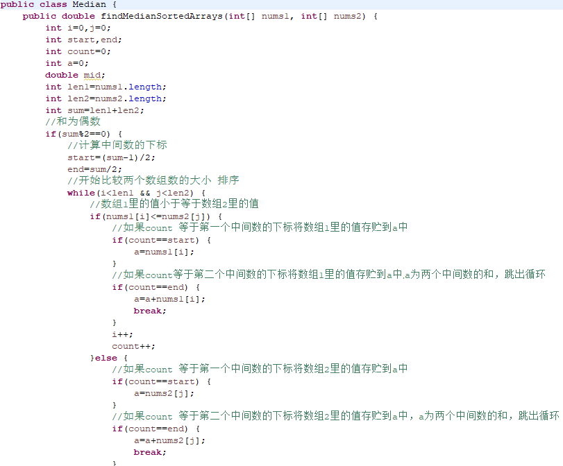

问题描述
给定两个大小为 m 和 n 的有序数组 nums1 和 nums2。请你找出这两个有序数组的中位数，并且要求算法的时间复杂度为 O(log(m + n))。
你可以假设 nums1 和 nums2 不会同时为空。
解题思路
不需要真的把两个数组有序合并在一起再算中位数。首先计算两个数组长度和sum，如果是偶数，那么中位数就是下标为(sum-1)/2和sum/2的数的和除以2.0，先用count计数排序两个数组的数，直到count==(sum-1)/2和sum/2，取出相应的中间数，除以2.0就可以得到想要的double类型的中位数；如果是奇数，中位数就是下标为sum/2的数，还是用count来计数，排序两个数组里的值，直到count==sum/2，取出中位数强转为double。
实现代码
可能有点长，但是理解起来真的很简单，不要嫌烦哦，坚持看下去
1 |
|

@import “uploads\images\median2.png” {width=”300px” height=”200px” title=”图片的标题” alt=”第2张”}
@import “uploads\images\median3.png” {width=”300px” height=”200px” title=”图片的标题” alt=”第3张”}
@import “uploads\images\median4.png” {width=”300px” height=”200px” title=”图片的标题” alt=”第4张”}